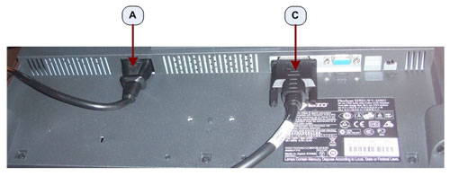

Illustration 10: EIZO S1921-X / S1923-H LCD Prescription / Image Monitor Connections

| Item | Destination | |
| A | Power Cable Connection | Rear Bulkhead Panel (N1 and N2) |
| B | SVGA (D-SUB) Video Connection | Host PC Video Card (DP0) |
| C | DVI-D Video Connection | Host PC Video Card (DVI) |
Illustration 10: EIZO S1921-X / S1923-H LCD Prescription / Image Monitor Connections
Illustration 11: EIZO S1921-X / S1923-H LCD Prescription / Scan Monitor Connections
